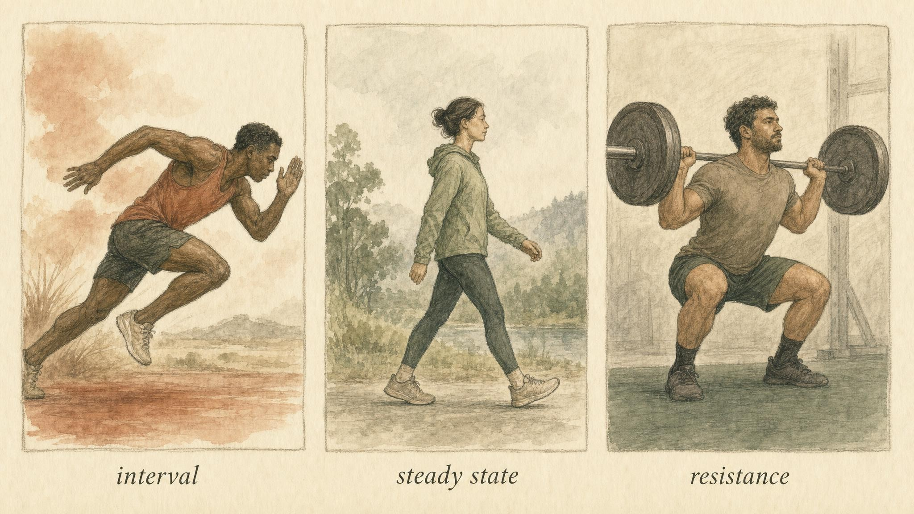
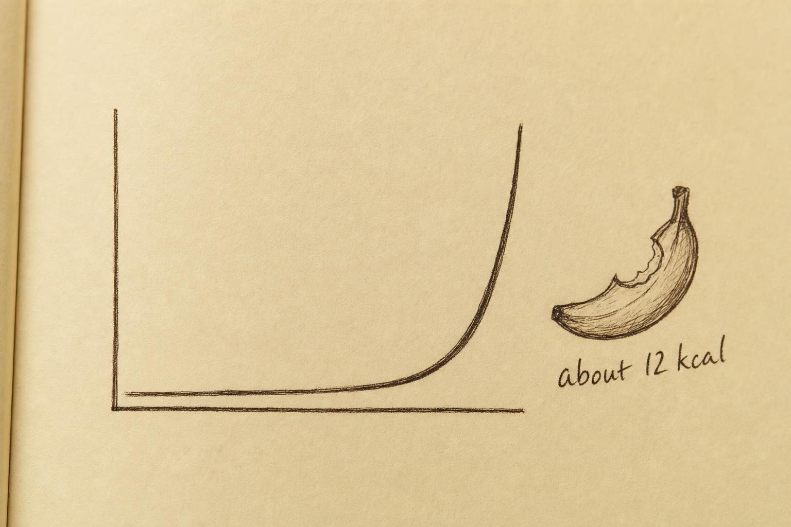

Sprint, Stroll, or Lift: What Exercise Modality Really Does
Grading HIIT, steady state, and resistance training honestly against physiology, then matching each to the person in front of you.
Ask ten people in a gym which kind of exercise burns the most fat and you will get ten confident answers, most of them wrong in interesting ways. One person swears by fasted morning walks because "that is when you burn fat." Another does nothing but sprint intervals because a podcast promised an afterburn that torches calories for a day and a half. A third lifts heavy and dismisses cardio entirely. Each has grabbed a real thread of physiology and pulled it out of proportion.
Here is the uncomfortable truth this chapter defends: for the advanced trainee stalled on a plateau, no single modality is universally superior, and the marketing around each one is louder than the evidence beneath it. What matters is understanding the distinct physiological signature of each tool and then matching that signature to a specific person with a specific recovery ceiling, joint history, training age, and body-fat level. That is the work. Let us do it properly.
Throughout this chapter you will follow one learner, Desmond, a 37-year-old who has trained for fifteen years, sits at roughly twelve percent body fat, and has spent the last four months stalled on a plateau he cannot explain. His logbook is meticulous. His deficit is honest. And his program, which he built himself from three different influencers, alternates a punishing sprint-interval session with a long steady jog and two rushed strength sessions squeezed in whenever his knees, which have never fully recovered from a college soccer injury, allow it. Desmond is not a patient in this course and he is not a case to be solved. He is a stand-in for a specific, common confusion: the belief that more modality, stacked without a plan, must beat any one modality applied with intention. By the end of this chapter you will be able to explain, in physiological terms, why his current approach is quietly working against him, and what an honest redesign would look like. His story is a thread we return to, not a diagnosis, and we will be careful about that difference the whole way through.
Three tools, three signatures
Before we grade anything, refresh the vocabulary. When you exercise, your body draws energy from a shifting blend of two main fuels: fat, stored as triglyceride in adipose tissue and inside muscle, and carbohydrate, stored as glycogen in muscle and liver. The proportion of each depends heavily on how hard you are working. This is the crossover concept, and it was mapped precisely in a landmark study you should know by name.
Romijn and colleagues (1993) used stable isotope tracers in five endurance-trained subjects to measure exactly where energy came from across a range of intensities. At low to moderate effort, roughly 25 to 65 percent of maximal oxygen uptake, whole-body lipolysis and fat oxidation peaked. As intensity climbed toward 85 percent of VO2max, the absolute rate of fat use fell while carbohydrate oxidation rose steeply to meet the demand. In plain terms: the harder you go, the more your body leans on sugar and the less, proportionally, on fat. Worth noting, too, is a second detail from the same trial: muscle triglyceride, the fat stored directly inside muscle fibers rather than out in adipose tissue, only contributed meaningfully at the higher intensities, while peripheral lipolysis from fat tissue itself dominated at the lower ones. Even within "fat burning," the source of that fat shifts with intensity, which is one more reason a single percentage on a treadmill display oversimplifies what is actually happening.
This single finding is the origin of the "fat-burning zone" idea printed on cardio machines, and it is also the origin of one of the most durable misreadings in fitness. Yes, low intensity burns a higher percentage of fat. No, that does not mean it strips more fat off your body over a week, because percentage of fuel during one session is not the same thing as total fat balance over days. We will return to this repeatedly. Hold the distinction between fuel used during a session and fat lost over time as the central mental hinge of the whole chapter. It is the same distinction, stated in a new form, that will let us make sense of the afterburn debate two sections from now, and it is worth pausing on until it feels obvious rather than merely memorized.

Three modalities, three distinct physiological signatures." data-image-idx="0" style="display:block;max-width:100%;max-height:75vh;height:auto;width:auto;margin:0 auto;cursor:pointer;">The signature of high-intensity interval work
High-intensity interval training, or HIIT, alternates hard efforts near or above your aerobic ceiling with recovery periods. Physiologically, its defining feature is not fat oxidation during the work itself, which is modest because you are running mostly on carbohydrate. Its signature is adrenergic drive: hard intervals flood the system with catecholamines, the adrenaline and noradrenaline whose downstream lipolytic and thermogenic effects you met in Chapter 2. Recall the receptor logic from that chapter: catecholamines dock onto beta-adrenergic receptors, which accelerate lipolysis, and onto alpha-2-adrenergic receptors, which restrain it, and the ratio between the two determines how eagerly a given patch of fat tissue actually gives up fuel. A hard interval effort does not change that receptor map. What it changes is the volume of the signal arriving at it, a large, repeated adrenergic pulse rather than a gentle trickle. That surge continues to echo after the session ends, driving elevated fat oxidation and a measurable, if small, elevation in post-exercise metabolism, a topic the next section will weigh with hard numbers rather than adjectives.
There is a second channel worth naming here, because it connects directly to Chapter 3. Sustained, intense adrenergic drive is also the signal that engages thermogenic tissue, the beta-3-adrenergic receptors on brown and beige fat that, when stimulated, burn fatty acids locally for heat rather than releasing them into the blood for later use elsewhere. HIIT recruits this pathway more forcefully than gentle movement does, simply because the sympathetic outflow is larger. This is real, and it is part of why interval work feels metabolically special. But recruiting a pathway and it being a large contributor to total daily energy expenditure are two different claims, and the honest sizing of that gap is most of what this chapter is about.
HIIT is potent signal per minute. It is time-efficient, it improves insulin sensitivity briskly, and it produces genuine body-composition change. What it is not, as we will see, is a metabolic cheat code that spends enormous total energy.
The signature of steady-state cardio
Steady-state cardio, the continuous jog, ride, row, or brisk walk held at a comfortable moderate intensity, has the opposite profile. Low adrenergic spike, high proportional fat use during the session, and, crucially, low friction. You can do a great deal of it without wrecking recovery. Its physiological virtue is boring and real: it is a reliable, sustainable way to spend energy without imposing much fatigue on the systems you need for lifting. Its total energy cost accumulates steadily with duration, which is exactly why volume, not intensity, is its lever. Because the adrenergic pulse is modest, steady state barely touches the thermogenic pathway from Chapter 3 at all. It earns its keep almost entirely through duration multiplied by a stable, moderate rate of fuel use, not through any special hormonal spike.
The signature of resistance training
Resistance training earns its own category because its primary contribution during a fat-loss phase is not the calories burned lifting, which are unremarkable, but what it does to the tissue you are trying to keep. In an energy deficit your body is perfectly willing to strip muscle alongside fat. Resistance training is the mechanical signal that tells it not to. For the advanced trainee, whose lower body-fat level makes lean tissue increasingly vulnerable, this is the single most important physiological role any modality plays. We will give it the extended treatment it deserves.
Notice, too, that resistance training's adrenergic signature is real but different in character from HIIT's. A heavy set produces a genuine catecholamine rise, but the total time under that drive across a session is short, and the tissue doing most of the responding is skeletal muscle rather than fat. Resistance training does not compete with HIIT or steady state for the fuel-release and fuel-burn pathways of Chapters 2 and 3. It operates on a mostly separate lever, the one that decides how much metabolically active tissue you have left to defend once the deficit ends. Three tools, three separate levers. Confusing them is the root of most bad programming, including, as we will see, Desmond's.
The afterburn, weighed honestly
No claim in exercise marketing has been stretched further than the afterburn, known technically as excess post-exercise oxygen consumption, or EPOC. The pitch is seductive: train hard enough and your metabolism stays elevated for hours, burning fat while you sit at your desk. There is a kernel of truth here, wrapped in a great deal of exaggeration. Let us separate them, and let us be precise about what EPOC actually is before we weigh it.
EPOC is the elevated oxygen consumption, above resting baseline, that persists after exercise stops. Some of it is mundane and uncontroversial: restoring depleted phosphocreatine, clearing accumulated lactate, replenishing the oxygen bound to myoglobin, and covering the modestly elevated heart rate, breathing rate, and body temperature that linger for a while after hard effort. None of this is the thermogenic uncoupling you met in Chapter 3, where UCP1 in brown and beige fat deliberately burns fuel as heat rather than capturing it as usable energy. EPOC is a broader, blunter accounting of extra oxygen used for ordinary recovery bookkeeping, not a claim that a dedicated furnace has switched on. Conflating the two is exactly how the marketing gets its exaggerated mileage: it borrows the vivid, real image of brown fat burning calories for heat and pastes it onto a phenomenon that is mostly plumbing repair.
The definitive appraisal comes from LaForgia, Withers, and Gore (2006), who reviewed the EPOC literature and reached a blunt conclusion. Yes, there is an exponential relationship between exercise intensity and EPOC magnitude, so harder work does produce more afterburn. But the optimism about EPOC as a major contributor to total daily energy expenditure and weight loss is, in their words, "generally unfounded." A meaningful, prolonged EPOC lasting anywhere from three to twenty-four hours requires a serious stimulus: on the order of fifty minutes at seventy percent of VO2max or better, or supramaximal efforts above 105 percent of VO2max sustained for at least six minutes. That is a punishing dose, and even then LaForgia and colleagues found EPOC comprises only about six to fifteen percent of the net total oxygen cost of the exercise bout itself, which means the afterburn is a fraction of a fraction, a small percentage added onto a session that was already a limited slice of the day's total energy expenditure.
A recent well-controlled trial sharpens the picture. Jiang and colleagues (2024) matched HIIT against moderate continuous running for total energy expenditure, roughly 300 kilocalories per session, in untrained men with obesity, then measured what happened afterward using indirect calorimetry. HIIT did win on afterburn: EPOC was higher after intervals, about 66 kcal versus 54 kcal for the continuous condition, with the difference concentrated in the first ten minutes after stopping. Post-exercise lipid oxidation was also higher after HIIT, with roughly 38 percent of the recovery energy coming from fat compared with about 30 percent after continuous running. This is a real effect, and it favors intervals on every measure the researchers tracked. But look at the magnitude. The interval advantage in total afterburn was roughly a dozen calories, less than a bite of a banana. The signature of HIIT is genuine, the direction is real, and the size is small.
So why does HIIT still change bodies? Not through afterburn arithmetic. Boutcher (2011), in a comprehensive review of high-intensity intermittent exercise, argues the effect runs through several converging routes: strong catecholamine release driving lipolysis in subcutaneous and abdominal fat, improved insulin sensitivity, favorable skeletal muscle adaptations, and, importantly, appetite and adherence effects that make the work sustainable for time-pressed people. The mechanism is signaling and efficiency, not a metabolic furnace that runs all day. When you read a claim built on EPOC, weigh it against these numbers. The afterburn is a rounding error dressed up as a revolution.
This is precisely the number Desmond had wrong. He built his hardest, most joint-punishing session around the belief that a twenty-minute sprint block would keep his metabolism elevated well into the evening, effectively doubling its worth. Run his logic through LaForgia and Jiang and the arithmetic collapses. His interval session was doing real, useful work through its signal, not through a lingering furnace, and the true afterburn advantage over an equivalent steady effort was closer to a dozen calories than the hours of elevated burn he had been promised. He was not wrong that intervals matter. He was wrong about which mechanism was doing the work, and that mistake was costing him recovery he could have spent elsewhere.

The afterburn is real, exponential with intensity, and small." data-image-idx="1" style="display:block;max-width:100%;max-height:75vh;height:auto;width:auto;margin:0 auto;cursor:pointer;">HIIT versus steady state: what the head-to-head trials show
Strip away the afterburn mythology and a fair question remains: when you compare interval work against moderate continuous training directly, does one win on fat loss? The best answer comes from Wewege and colleagues (2017), a systematic review and meta-analysis of thirteen randomized trials in overweight and obese adults, averaging about ten weeks at three sessions per week. It is worth naming precisely what they measured. The trials tracked whole-body fat mass by validated body-composition methods, plus waist circumference as a secondary marker of abdominal adiposity, across HIIT and moderate-intensity continuous training programs designed to be comparable in structure if not in time.
The result is refreshingly clean. Both HIIT and moderate-intensity continuous training produced significant reductions in whole-body fat mass and waist circumference, and there was no significant difference between them on any body-composition measure. Neither modality was superior for fat loss. What separated them was time: HIIT achieved equivalent outcomes in roughly forty percent less training time. The same review also noted an interesting wrinkle by exercise mode: running-based programs produced large fat-loss effects in both the HIIT and continuous forms, while cycling-based programs showed little fat-loss benefit in either form, a reminder that the modality label matters less than the total mechanical and metabolic demand a given exercise mode actually places on the body.
Read that carefully, because it reframes the entire debate. The choice between intervals and steady state is not a choice between a superior and inferior fat-loss tool. It is a choice about time, recovery cost, and preference. HIIT buys you the same result in less clock time at the price of higher systemic and joint stress. Steady state costs more minutes but almost no recovery capital, and it can be layered on top of hard lifting without interference. For a busy professional who tolerates intensity well, intervals are elegant. For an advanced trainee already spending their recovery budget on heavy resistance work, steady state is often the smarter cardio because it does not compete for the same resources.
This is the first place population fit governs the recommendation rather than physiology alone. The traces in the explorer widget above show identical total-cost potential for matched sessions. The deciding variable is not which burns more fat in the abstract. It is which one this person can absorb, repeat, and recover from, week after week. Hold that thought; it becomes the spine of the chapter's second half.
Desmond's plan had already picked a side without knowing it was picking one. He was running both a hard interval session and a long steady jog in the same week, on top of lifting, on knees that had never fully recovered from an old injury. Wewege's result does not say he needs both types of cardio to succeed. It says both are roughly equivalent tools for the fat-loss half of his goal, which means the real question for him was never which one works. It was which one his knees, his schedule, and his lifting recovery could actually absorb without him quietly borrowing capacity from the modality that was protecting his muscle.
Resistance training and the defense of lean mass
Now for the modality that changes the calculus most for the advanced trainee. To understand why resistance training matters so much in a deficit, you have to understand what a deficit does to muscle, and why muscle matters to the whole enterprise of fat loss.
Why lean mass is worth defending
Stiegler and Cunliffe (2006) reviewed the diet and exercise literature on preserving fat-free mass and resting metabolic rate during weight loss, and their conclusions form the physiological backbone of everything that follows. Two facts stand out. First, fat-free mass is the primary determinant of resting metabolic rate. The muscle you carry is metabolically expensive tissue; lose it and you lower the floor of your daily energy expenditure, deepening the very adaptive slowdown that Chapter 3 described. Second, caloric restriction without resistance exercise routinely causes lean tissue loss. Diet alone, or diet plus cardio alone, tends to shed muscle along with fat. Resistance exercise is the intervention that attenuates that decline.
For the person early in a fat-loss journey with substantial fat to lose, this matters but is forgiving. For the advanced trainee near a plateau at a lower body-fat level, it is decisive. The leaner you get, the more your body defends its remaining fat and the more willing it becomes to sacrifice muscle for fuel. This is not a metaphor; it is the physiological reality that makes the last stretch of fat loss so different from the first. Without a strong mechanical signal saying "keep this tissue," an aggressive deficit will happily spend it.
The STRRIDE evidence: what each modality actually did to body composition
The cleanest demonstration comes from the STRRIDE AT/RT trial reported by Willis and colleagues (2012), which randomized 119 sedentary overweight and obese adults across eight months to aerobic training alone, resistance training alone, or the two combined. The findings are worth memorizing because they map each modality to its real contribution.
Aerobic training, and the combined program, reduced total body mass and fat mass more than resistance training alone. If your only metric is scale weight or fat lost, cardio wins on volume of energy spent. But here is the pivot: only the programs that included resistance training increased lean body mass. Cardio alone was better at moving the scale down; resistance was the only thing that added or protected muscle. The combined program produced the most holistic body-composition improvement, capturing both benefits without requiring meaningfully more fat loss than aerobic training gave on its own.
Translate this into practice. If you strip resistance work out of a fat-loss plan, you may see faster scale movement and quietly lose muscle you cannot afford to lose. If you rely on resistance alone, you preserve tissue but leave energy expenditure on the table. The two are complementary, not competing, and the advanced trainee generally needs both: resistance as the non-negotiable defender of lean mass, cardio as the flexible energy-spending and cardiovascular tool layered around it. It is worth adding a practical note the trial itself surfaces: a companion analysis of the same STRRIDE cohort found that the aerobic and combined groups also spontaneously reduced their reported energy intake over the eight months, while the resistance-only group's body mass barely moved despite similar dietary trends. Exercise does not operate in a sealed metabolic box; it interacts with appetite and eating behavior too, a thread this course develops fully in a later chapter.
The deficit threshold that changes how you program
Here is one of the most practically useful numbers in this course. Murphy and Koehler (2021) conducted a meta-analysis and meta-regression of resistance training performed under an energy deficit. Their headline finding is a gift to practitioners: energy deficits impair gains in lean mass, with a meaningful effect size of about minus 0.57, but they do not impair gains in strength. You can get stronger while dieting; you just cannot expect to add much muscle.
The meta-regression then located a threshold. Lean-mass gains were prevented once the deficit reached roughly 500 kcal per day. Below that, some lean-mass accrual remained possible; above it, the priority shifts firmly from building muscle to defending it. This gives you a concrete lever. For a person trying to recompose and keep adding tissue, the deficit needs to stay modest, under roughly 500 kcal. If the goal is faster fat loss and the deficit is deeper, reset the expectation to preservation, not growth, and let strength maintenance, not hypertrophy, be the training target. Notice, too, that strength is preserved across the range, which is why keeping heavy, moderate-repetition work in the program is your best insurance for the muscle underneath.
Matching modality to the person
Everything above converges on a single decision frame. There is no universally best modality; there is only the best fit for a given person's recovery capacity, joint tolerance, training history, and body-fat level. Let us make the variables explicit and then work through cases.
The four governing variables
Recovery capacity. Hard intervals and heavy lifting both draw from the same central recovery budget. Someone with good sleep, low life stress, and a long training base can absorb more; someone frayed by a demanding job cannot. When recovery is limited, steady state is the modality that adds energy expenditure without further taxing recovery, which is precisely why it is the low-friction default.
Joint tolerance. High-impact intervals and heavy loading stress connective tissue. A history of cranky knees or a prior shoulder issue is not a reason to stop training; it is a reason to steer volume toward lower-impact choices such as cycling, rowing, or incline walking, and to manage loading carefully. Remember the clinician boundary here: persistent joint pain, swelling, or dysfunction is a signal that warrants professional evaluation, never something to train through on assumption.
Training history. Training age changes both what a person can tolerate and what they still have to gain. A novice can improve on almost any stimulus and has muscle to build even in a mild deficit. An advanced trainee has a narrower margin: less new muscle available, higher stakes on preserving what exists, and a body more practiced at defending fat.
Body-fat level. The leaner the person, the more lean tissue is at risk and the more resistance training moves from useful to essential. Higher body-fat individuals have more metabolic room and more forgiving physiology; the modality mix is less fragile.
That boundary matters directly for a variable like joint tolerance. Understanding that high-impact HIIT stresses a compromised knee more than steady state does is physiology anyone can reason through. Deciding whether a specific ache in a specific knee is safe to train around, versus a sign of something that needs imaging or a referral, is a clinical judgment. This chapter can teach you to read the load a modality places on a joint. It cannot and should not tell a specific person with a specific joint history what their knee can safely absorb. That determination belongs to a qualified clinician, and steering someone toward one when persistent pain, swelling, or loss of function shows up is itself part of using this material responsibly.
Worked case one: Desmond, the advanced, lean trainee stuck on a plateau
Return to Desmond: roughly twelve percent body fat, fifteen years of training history, moderate recovery capacity strained by a demanding job, and knees that complain about repeated impact from an old soccer injury. He is the population this course exists for, and running his profile through the four governing variables produces a very different plan from the one he built himself. The priorities line up cleanly. Resistance training is non-negotiable and comes first, three to four sessions per week, kept heavy enough to maintain strength and therefore protect muscle, since Murphy and Koehler tell us strength survives a deficit even when growth does not. The deficit itself should shrink from roughly 700 kcal toward something closer to the 500 kcal threshold, so lean mass is defended rather than sacrificed. Cardio is layered in as steady state, low-impact by choice to spare the knees, adding energy expenditure without stealing recovery from the lifting that matters most. HIIT enters sparingly if at all, perhaps one short low-impact session on a bike or rower rather than a track, because its recovery cost competes directly with heavy resistance work and its unique benefits are not worth the interference here. The winning modality for Desmond is resistance, supported by steady state, with intervals demoted to optional and, if kept, moved off his knees entirely.
Notice what changed and what did not. Desmond does not need to abandon intervals because they are inferior; Wewege's data says they are not. He needs to demote them because his specific recovery ceiling, joint history, and deficit depth cannot absorb everything he was asking of them simultaneously. The physiology did not fail him. The allocation did.
Worked case two: the novice with more fat to lose
Now a person at thirty percent body fat, new to training, good recovery, healthy joints. The physiology is forgiving and the stakes on lean mass are lower. Resistance training still belongs in the plan, because it builds the muscle base that will serve every future phase and, in a novice, can grow even in a mild deficit, since Murphy and Koehler's threshold has far more room to breathe when the training stimulus itself is still novel and highly responsive. But this person can tolerate and benefit from more variety. HIIT is attractive here for its time efficiency and insulin-sensitivity benefits, and the healthy joints make impact less of a concern. Steady state remains the low-friction volume tool. The mix is broader because the body can absorb it and the margin for error is wide. Adherence and enjoyment can drive more of the decision, which foreshadows Chapter 7: the best modality is frequently the one this person will actually keep doing. Where Desmond's case is a lesson in narrowing focus onto the one lever that matters most, this case is a lesson in the opposite direction: a forgiving body can afford a broader, more varied menu without paying for it the way Desmond did.
Worked case three: the masters athlete
A trainee with a long history, moderate body fat, a prior shoulder issue, and a recovery capacity that is real but no longer generous. Here resistance training is essential for both lean-mass preservation and the broader health of aging tissue, but exercise selection must respect the shoulder, and any return of pain is a reason to seek evaluation rather than push. Steady state is ideal because it delivers cardiovascular and energy benefits with minimal recovery cost, which matters more as recovery narrows with age. HIIT can be used, but judiciously and in low-impact forms, because the recovery bill comes due more slowly at this stage. The governing principle is the same as always: match the tool to the ceiling, not to a generic template borrowed from someone in a completely different situation.
The optimism about EPOC as a major contributor to total daily energy expenditure and weight loss is generally unfounded.
LaForgia, Withers, and Gore (2006)
Putting the myths to rest
Let us name the misconceptions directly, because clearing them is half the value of this chapter.
Myth: low intensity burns more fat. True during the session, in percentage terms, per Romijn's crossover data. Irrelevant to weekly fat balance, which depends on total energy over days, not fuel proportion during one hour. Do not choose intensity to chase a within-session fat percentage.
Myth: HIIT torches calories for hours afterward. The afterburn is real, exponential with intensity, and small, on the order of a dozen extra calories in the best controlled comparison. HIIT works through signaling, efficiency, and insulin sensitivity, not through a metabolic bonfire.
Myth: one modality is best for fat loss. The head-to-head meta-analysis found HIIT and steady state equivalent on every body-composition measure, differing only in time cost. There is no crown to award.
Myth: cardio is enough, or lifting is enough. STRRIDE showed cardio moves the scale more but only resistance protects and builds lean mass. For the advanced trainee, dropping resistance work is the fastest way to lose the muscle you most need to keep.
Myth: more modalities stacked together always beats fewer, chosen carefully. This is the myth Desmond lived inside for four months. Each of his three tools is legitimate on its own terms. Stacked without regard to his recovery ceiling, his joint history, and his deficit depth, they competed with each other rather than compounding, and the modality doing the most important job, defending his muscle, was the one getting the least attention.
The honest summary is unglamorous and correct. Each tool does something real and distinct. Resistance defends the tissue that sets your metabolic floor. Steady state spends energy cheaply in recovery terms. Intervals deliver strong signal and time efficiency at a higher recovery price. The art is assembling them around a specific person, and the science tells you exactly what each contributes so you can assemble honestly.
Key Takeaways
- Fuel used during a session is not the same as fat lost over time. Low intensity burns a higher fat percentage but does not win the weekly fat-balance contest (Romijn et al., 1993).
- The afterburn (EPOC) is real, rises exponentially with intensity, and is small in absolute terms. Roughly 12 extra kilocalories separated HIIT from matched continuous work in a controlled trial, and EPOC comprises only a small share of a session's total oxygen cost (Jiang et al., 2024; LaForgia et al., 2006).
- HIIT and steady-state cardio produce equivalent body-composition outcomes; HIIT simply achieves them in about 40 percent less time at a higher recovery cost (Wewege et al., 2017).
- Fat-free mass is the primary determinant of resting metabolic rate, and resistance training is the intervention that attenuates lean-mass loss during a deficit (Stiegler & Cunliffe, 2006).
- Cardio moves the scale more, but only programs including resistance training increased lean body mass; the combination is most holistic (Willis et al., 2012).
- Energy deficits impair lean-mass gains but not strength, with lean-mass gains prevented near a deficit of about 500 kcal per day. Keep the deficit modest to preserve tissue and keep training heavy to protect strength (Murphy & Koehler, 2021).
- There is no universally superior modality. Match the tool to recovery capacity, joint tolerance, training history, and body-fat level. Pain or dysfunction warrants professional evaluation.
- Stacking every modality at maximum effort does not stack their benefits. Each tool draws on a shared recovery budget, and overreaching on one starves the modality doing the most important job for a given person.
We have treated exercise modality as a matter of fuel, signal, and recovery. Chapter 5 adds the variable that quietly determines how effective any of it will be: insulin sensitivity. We will see how each modality reshapes the way your muscle and fat tissue respond to insulin, why that response tightens or loosens the deficit's grip on fat, and how to sequence training and nutrition so the two work with each other rather than against. Desmond's story continues there too: a better-allocated training week is only half of what turned his plateau around, and the other half runs directly through the lever Chapter 5 introduces.
References
Boutcher, S. H. (2011). High-intensity intermittent exercise and fat loss. Journal of Obesity, 2011, 868305. https://doi.org/10.1155/2011/868305
Jiang, L., Zhang, Y., Wang, Z., Wang, Y., & Wang, X. (2024). Acute interval running induces greater excess post-exercise oxygen consumption and lipid oxidation than isocaloric continuous running in men with obesity. Scientific Reports, 14, 9178. https://doi.org/10.1038/s41598-024-59893-9
LaForgia, J., Withers, R. T., & Gore, C. J. (2006). Effects of exercise intensity and duration on the excess post-exercise oxygen consumption. Journal of Sports Sciences, 24(12), 1247 to 1264. https://doi.org/10.1080/02640410600552064
Murphy, C., & Koehler, K. (2021). Energy deficiency impairs resistance training gains in lean mass but not strength: A meta-analysis and meta-regression. Scandinavian Journal of Medicine & Science in Sports, 32(1), 125 to 137. https://doi.org/10.1111/sms.14075
Romijn, J. A., Coyle, E. F., Sidossis, L. S., Gastaldelli, A., Horowitz, J. F., Endert, E., & Wolfe, R. R. (1993). Regulation of endogenous fat and carbohydrate metabolism in relation to exercise intensity and duration. American Journal of Physiology-Endocrinology and Metabolism, 265(3), E380 to E391. https://doi.org/10.1152/ajpendo.1993.265.3.E380
Stiegler, P., & Cunliffe, A. (2006). The role of diet and exercise for the maintenance of fat-free mass and resting metabolic rate during weight loss. Sports Medicine, 36(3), 239 to 262. https://doi.org/10.2165/00007256-200636030-00005
Wewege, M., van den Berg, R., Ward, R. E., & Keech, A. (2017). The effects of high-intensity interval training vs. moderate-intensity continuous training on body composition in overweight and obese adults: A systematic review and meta-analysis. Obesity Reviews, 18(6), 635 to 646. https://doi.org/10.1111/obr.12532
Willis, L. H., Slentz, C. A., Bateman, L. A., Shields, A. T., Piner, L. W., Bales, C. W., Houmard, J. A., & Kraus, W. E. (2012). Effects of aerobic and/or resistance training on body mass and fat mass in overweight or obese adults. Journal of Applied Physiology, 113(12), 1831 to 1837. https://doi.org/10.1152/japplphysiol.01370.2011